Hogar Digital
2º STI
IES Benjamin Rua
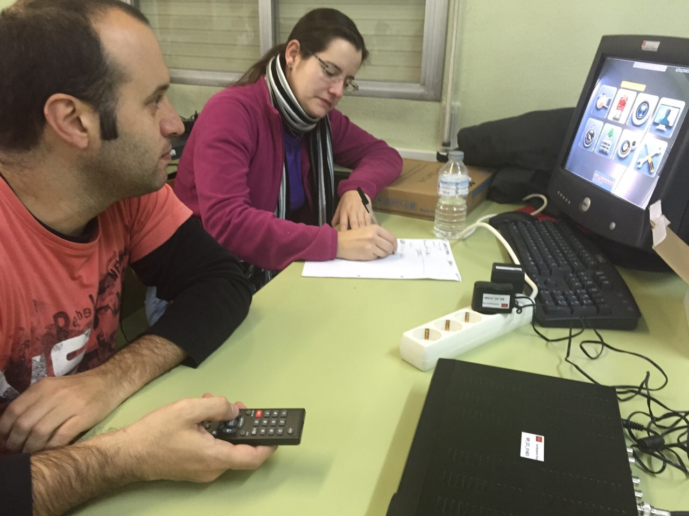


 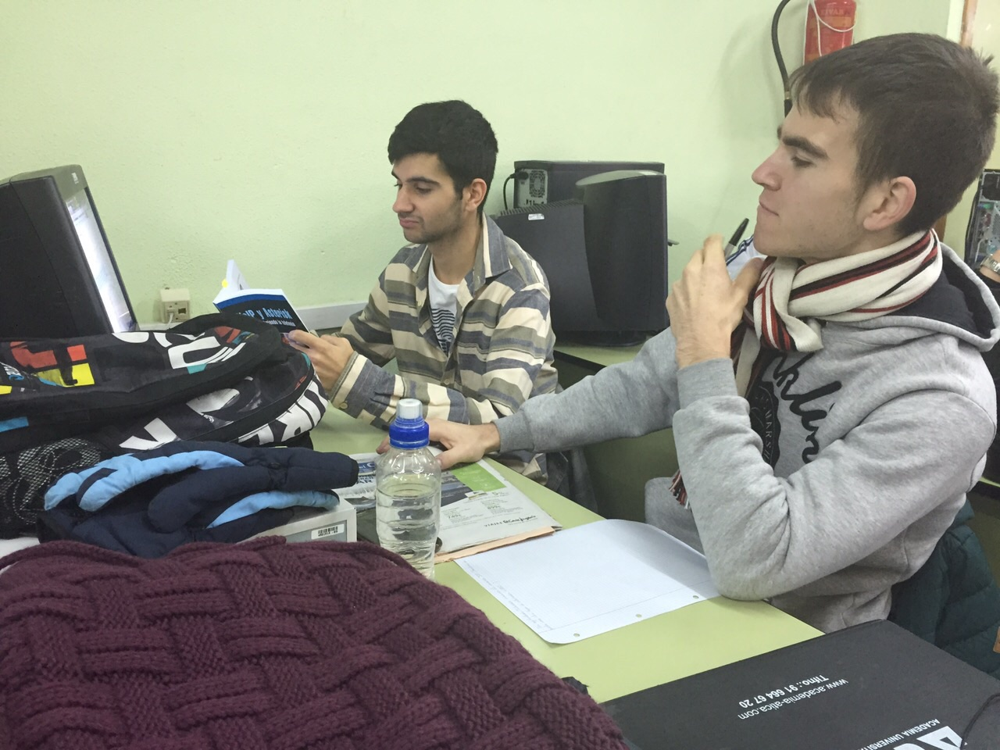
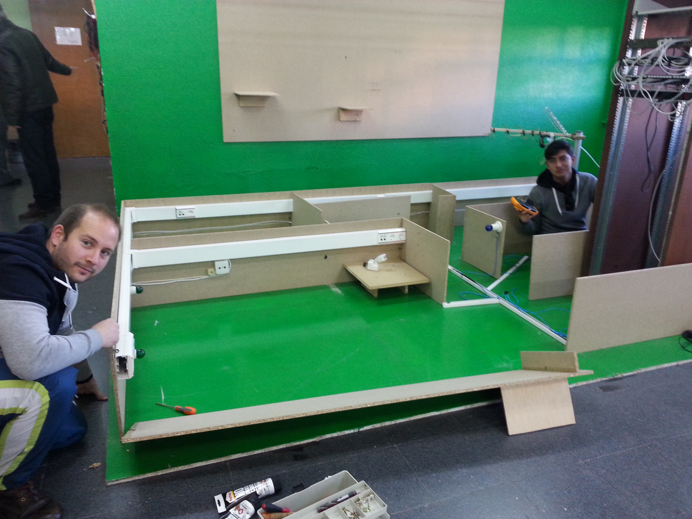
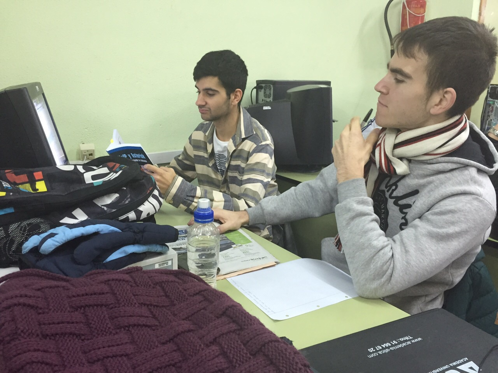
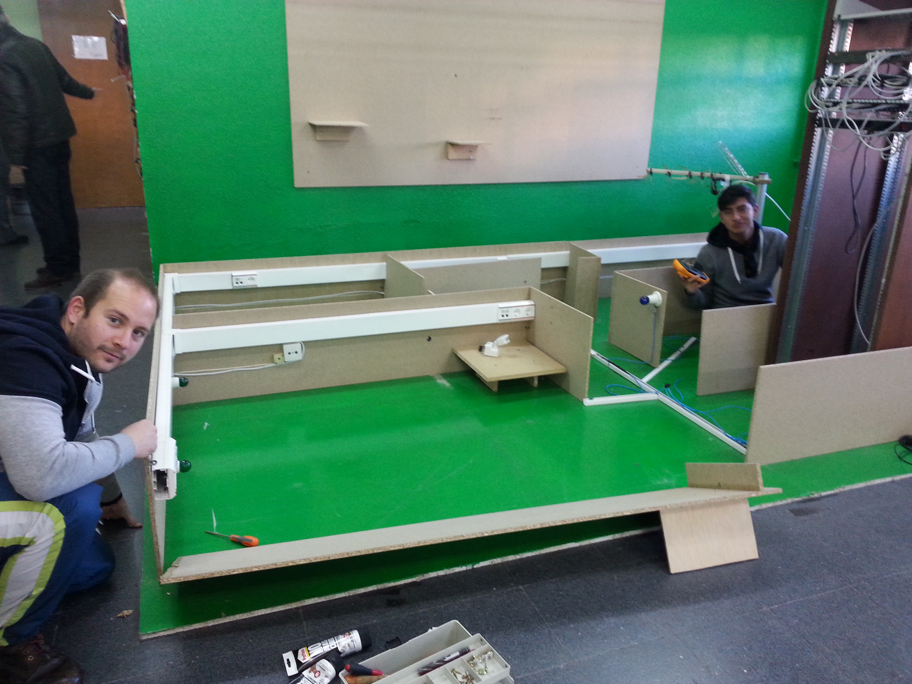


 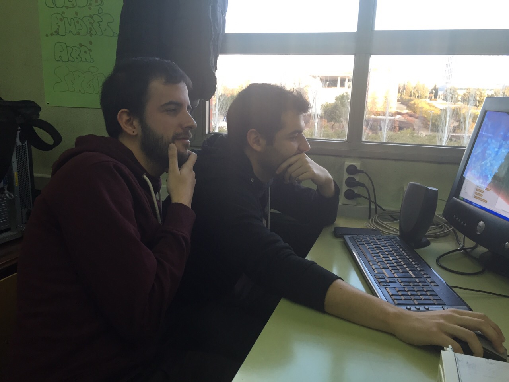
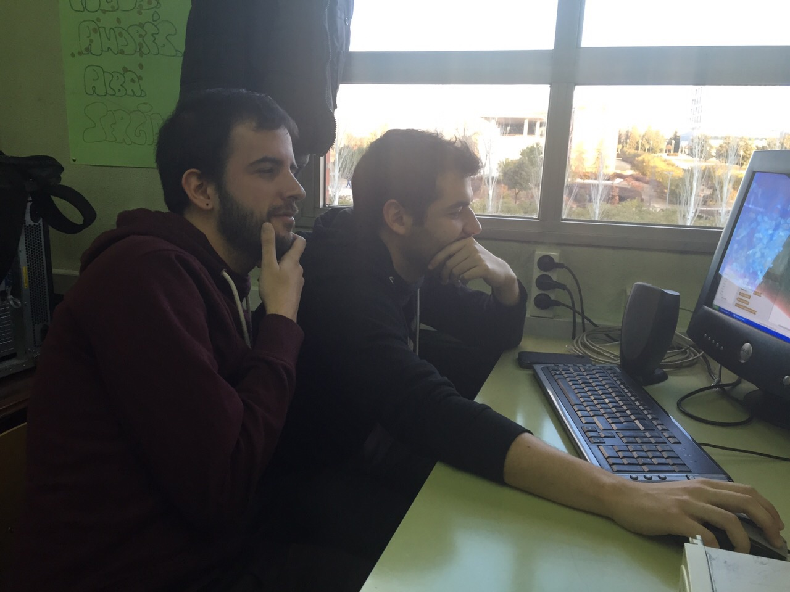
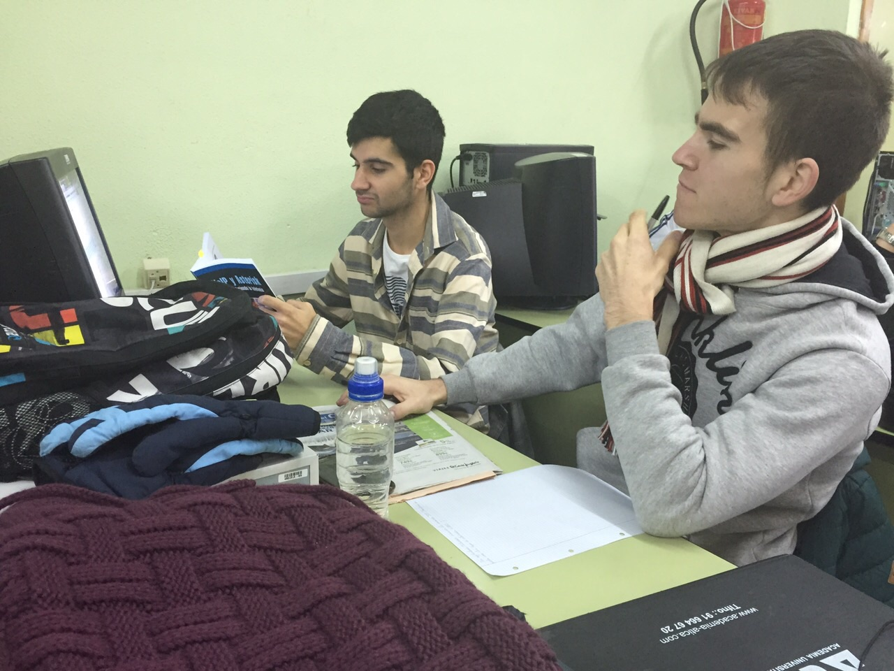
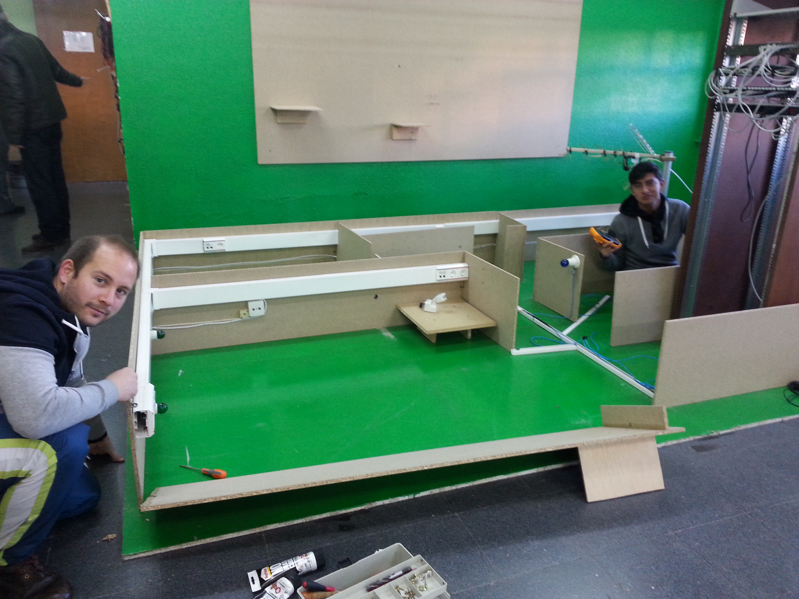
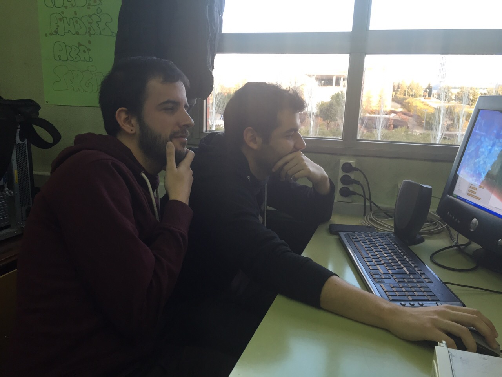
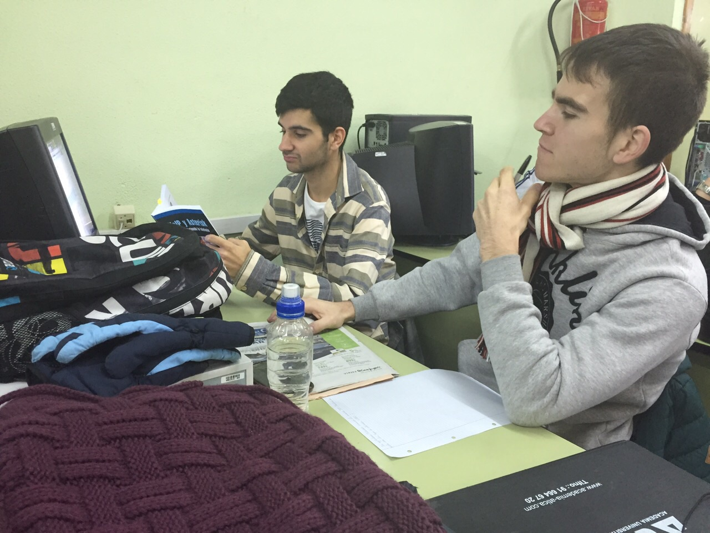
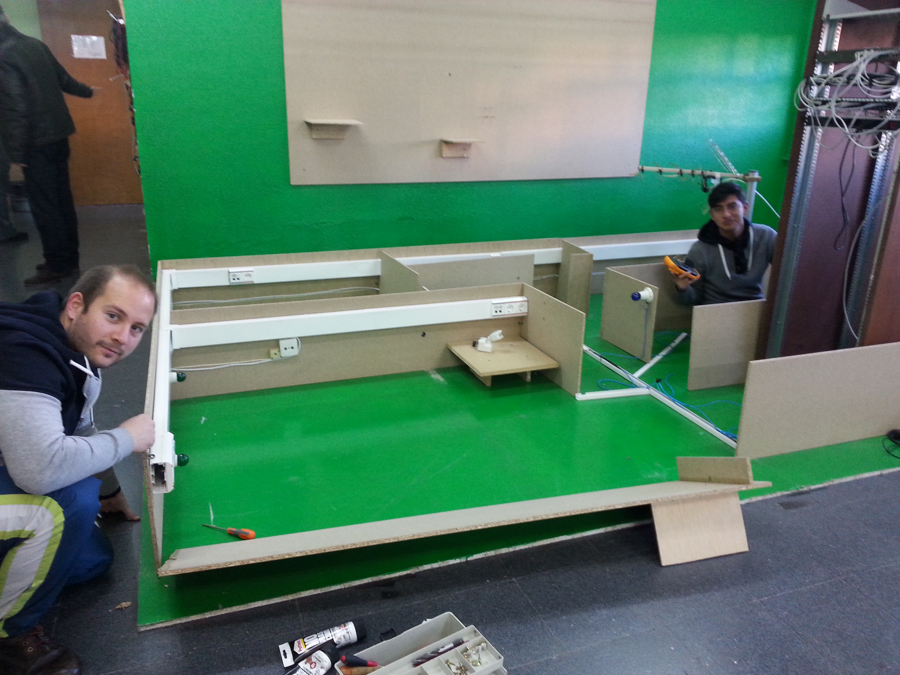
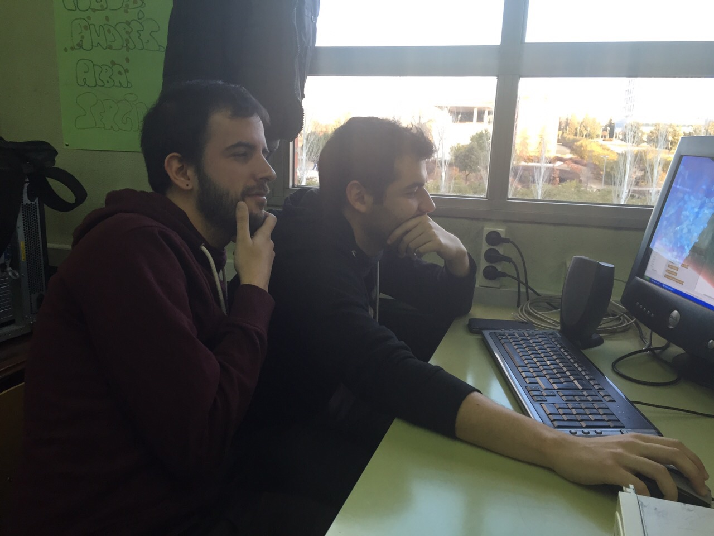
El primer paso de nuestro proyecto fue formatear el ordenador que vamos a usar como servidor de Trixbox, mediante el propio CD-ROM de Trixbox.
Una vez formateado el ordenador, procedemos a instalar el servidor PBX a través de un CD-ROM en el que está alojada la imagen de Trixbox.
Al comenzar la instalación nos pedirá una serie de configuraciones como por ejemplo el idioma y el tipo de teclado del que disponemos. Después de indicar estos ajustes comienza la instalación. Una vez terminada la instalación se le asignará una IP automáticamente al servidor de Trixbox. Sacamos el CD-ROM y reiniciamos el servidor para que arranque desde el disco duro.
Una vez que hemos arrancado el servidor desde el disco duro, se inicia el programa de la PBX y lo primero que nos pide es un login y una password por defecto que son los siguientes:
Introducidos estos comandos ya hemos arrancado la PBX y ahora tenemos que acceder a ella a través de otro ordenador alojado en la red. Para ello abrimos un navegador e introducimos la IP que se le asignó automáticamente al servidor. Esta IP se puede comprobar en la pantalla del servidor PBX.
Al entrar en la configuración de la PBX a través del navegador nos pide un usuario y una contraseña que son las siguientes:
Tras introducir estos datos se nos despliega un menú para introducir la configuración que deseemos en la PBX. Todo a través de una interfaz muy intuitiva.
Por último conectamos las pasarelas a la red y las configuramos. Para ello debemos introducir la IP de las pasarelas en un navegador y configurarlas a nuestro gusto.